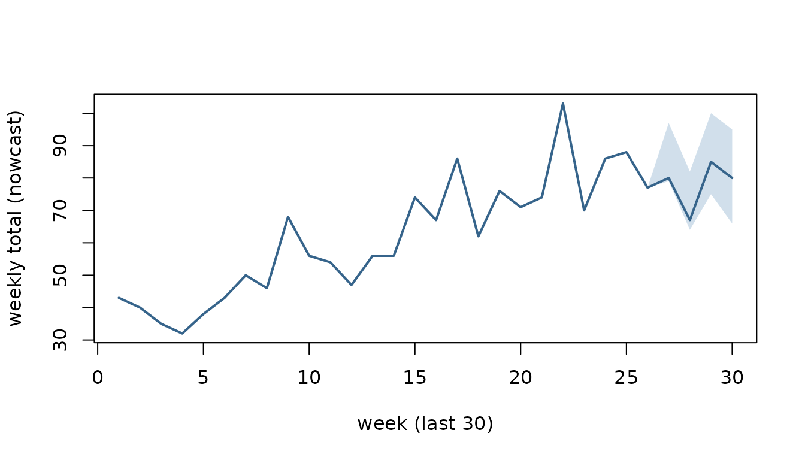

Nowcasting a reporting triangle: an end-to-end pipeline
Richard Aubrey White
Source:vignettes/nowcasting.Rmd
nowcasting.Rmdcsalert provides a small, draw-parallel surveillance
engine built around three S3 formats:
-
csfmt_reporting_triangle_v3— the reference-week x reporting-week input (who was reported when). -
csfmt_ensemble_v3—$dataplus, per measure, a matrix of Monte-Carlo$draws(rows = weeks, columns = simulations). An analysis stage adds columns to the draws, so uncertainty propagates without a second pass. - a quantile collapse of those draws (optionally
healed into
cstidy::csfmt_rts_data_v3for the usual plots and tables).
This vignette runs one synthetic series through four stages:
- Nowcast — complete the right-truncated recent weeks.
- Validation — replay the method against what was known in the past and score it.
- Reporting completion — read the reporting delay off the triangle itself.
- Short-term trend — estimate the recent slope of the completed series, per draw.
One triangle carries all four, so the stages compose rather than each
opening a fresh demo dataset. When you set up a new indicator,
run stage 3 first: it is what supports the choice of
max_delay that the other three then use.
library(data.table)
#>
#> Attaching package: 'data.table'
#> The following object is masked from 'package:base':
#>
#> %notin%
library(csalert)
#> csalert 2026.8.5
#> https://niphr.github.io/csalert/A synthetic reporting triangle
Real surveillance data arrives with a delay: a case with reference
week W may only be reported in week
W, W+1, W+2, and so on. The
generator below simulates 70 reference weeks of a seasonal indicator,
with a reporting speed-up built in at the start of ISO year
2024 — the same system, reporting faster. Stage 3 recovers that
change from the triangle alone.
set.seed() is called inside the generator, not
beside it. A seed set outside a function that is called more than once
leaves the second call running on a different stream, and the resulting
Monte-Carlo noise reads as signal.
sim_reports <- function(first_ref = "2023-01",
n_weeks = 70L,
delay_slow = c(0.45, 0.30, 0.15, 0.07, 0.03),
delay_fast = c(0.70, 0.20, 0.06, 0.03, 0.01),
seed = 1L) {
set.seed(seed) # pinned inside, see above
weeks <- cstime::dates_by_isoyearweek$isoyearweek
i0 <- match(first_ref, weeks)
rows <- lapply(seq_len(n_weeks), function(w) {
ref <- weeks[i0 + w - 1L]
p <- if (cstime::isoyearweek_to_isoyear_n(ref) <= 2023) delay_slow else delay_fast
n <- rpois(1, 60 + 25 * sin(2 * pi * w / 52)) # a seasonal signal
data.table(
isoyearweek_reference = ref,
isoyearweek_reporting = weeks[i0 + w - 1L + sample(0:4, n, TRUE, p)]
)
})
# "today" is the last reference week: drop what has not been reported yet, so
# the most recent weeks are still incomplete -- the problem a nowcast solves
rbindlist(rows)[isoyearweek_reporting <= weeks[i0 + n_weeks - 1L]]
}
reports <- sim_reports()
triangle_long <- reports[, .(numerator = .N),
by = .(isoyearweek_reference, isoyearweek_reporting)]
triangle_long[, `:=`(indicator = "example", location = "nation",
age = "total", sex = "total")]
head(triangle_long, 4)
#> isoyearweek_reference isoyearweek_reporting numerator indicator location
#> <char> <char> <int> <char> <char>
#> 1: 2023-01 2023-04 4 example nation
#> 2: 2023-01 2023-01 23 example nation
#> 3: 2023-01 2023-03 10 example nation
#> 4: 2023-01 2023-02 20 example nation
#> age sex
#> <char> <char>
#> 1: total total
#> 2: total total
#> 3: total total
#> 4: total totalWrap it as a csfmt_reporting_triangle_v3. The as-of
boundary is read from the data — it is the newest reporting week
present, not the system clock.
tri <- csfmt_reporting_triangle_v3(
triangle_long,
id_cols = c("indicator", "location", "age", "sex"),
reference_col = "isoyearweek_reference",
reporting_col = "isoyearweek_reporting",
value_col = "numerator"
)
c(as_of = attr(tri, "as_of"),
newest_reporting_week = max(triangle_long$isoyearweek_reporting))
#> as_of newest_reporting_week
#> "2024-18" "2024-18"max_delay is the delay horizon used by stages 1 to 3
below. Stage 3 shows how to choose it from the data; 5 weeks is the
right answer for this series.
max_delay <- 5L1. Nowcast
Estimand. For each reference week, the total that
will have been reported at delays 0 .. max_delay - 1 — that
is, by the end of ISO week reference_week + max_delay - 1.
This is a horizon-capped total, not the eventual total:
anything reported later than max_delay - 1 weeks is outside
the estimand and no amount of nowcasting recovers it. Stage 3 is how you
check that the horizon is wide enough for the difference to be small.
For a settled week the quantity is already observed; for the most recent
weeks it is not, and the nowcast is a predictive distribution over
it.
nowcast_quasipoisson_v1() is a discriminative
(regression) engine. For each number of weeks a reference week has been
observed it fits, on the settled weeks, a quasipoisson regression with
an identity link of the settled total on the counts reported so far:
total ~ n[delay 0] + n[delay 1] + ... + n[delay h]R’s default intercept is present in that formula and is fitted. There
is no per-week magnitude parameter, so the recent weeks do not each
carry their own noisy level. Draws combine the fit’s parameter
uncertainty with a dispersion-matched negative binomial.
delay_window (default 26 weeks) restricts training to the
settled weeks within roughly that span, so the partial-to-total mapping
can follow a reporting regime that changes — as this series’ does.
set.seed(2)
ens <- nowcast_quasipoisson_v1(tri, max_delay = max_delay, n_sim = 500)
ens
#> <csfmt_ensemble_v3> 70 rows | 1 series | draws: numerator_nowcastedCollapse the draws to a quantile summary. original is
the count reported so far; the settled weeks sit exactly on it, the
recent weeks are completed above it.
q <- ens_collapse(ens, probs = c(0.05, 0.5, 0.95))
tail(q[, .(isoyearweek, original,
lo = numerator_nowcasted_q05x0,
med = numerator_nowcasted_q50x0,
hi = numerator_nowcasted_q95x0)], 8)
#> isoyearweek original lo med hi
#> <char> <num> <num> <num> <num>
#> 1: 2024-11 70 70.00 70 70
#> 2: 2024-12 86 86.00 86 86
#> 3: 2024-13 88 88.00 88 88
#> 4: 2024-14 77 77.00 77 77
#> 5: 2024-15 79 79.00 80 97
#> 6: 2024-16 64 64.00 67 82
#> 7: 2024-17 75 75.00 85 100
#> 8: 2024-18 55 65.95 80 95The settled weeks are pinned to their observed total, so they have no band at all. Only the incomplete weeks at the right-hand edge carry one:
show <- tail(q, 30)
xs <- seq_len(nrow(show))
plot(xs, show$numerator_nowcasted_q50x0, type = "n",
ylim = range(show$numerator_nowcasted_q05x0, show$numerator_nowcasted_q95x0),
xlab = "week (last 30)", ylab = "weekly total (nowcast)")
polygon(c(xs, rev(xs)),
c(show$numerator_nowcasted_q05x0, rev(show$numerator_nowcasted_q95x0)),
col = grDevices::adjustcolor("steelblue", 0.25), border = NA)
lines(xs, show$numerator_nowcasted_q50x0, lwd = 2, col = "steelblue4")
Keep the reference weeks: the later stages index off them.
weeks <- cstime::dates_by_isoyearweek$isoyearweek
ref_weeks <- q$isoyearweek2. Validation: replay the method against the past
Because the triangle records when every count arrived, you can reconstruct what was known at any past week and replay the engine against it, without keeping a second dated extract.
That reconstruction is exact only for an append-only reporting system: one where a count, once filed, keeps its original reporting week forever. Real systems also issue retrospective corrections, delete records and reclassify cases, and none of those leave a trace in the current triangle — a case reclassified last month looks as though it was always classified that way. Where such revisions matter, replay understates how much the published numbers actually moved, and a dated archive of extracts is the only way to measure it.
nowcast_censor() does the rewind. It returns a
csfmt_reporting_triangle_v3 with every cell reported after
the given week dropped, and its as-of boundary moved back:
past <- nowcast_censor(tri, as_of = ref_weeks[length(ref_weeks) - 8L])
c(now = attr(tri, "as_of"), then = attr(past, "as_of"),
rows_now = nrow(tri), rows_then = nrow(past))
#> now then rows_now rows_then
#> "2024-18" "2024-10" "324" "285"nowcast_truth() supplies the target. It returns a
two-column data.table (reference, truth) of
each reference week’s total summed over delays
0 .. max_delay - 1, keeping only the weeks old enough for
that total to be settled. The newest weeks are absent by design: they
have no truth to be scored against yet.
truth <- nowcast_truth(tri, max_delay = max_delay)
tail(truth, 3)
#> reference truth
#> <char> <num>
#> 1: 2024-12 86
#> 2: 2024-13 88
#> 3: 2024-14 77
c(reference_weeks = length(ref_weeks), settled = nrow(truth))
#> reference_weeks settled
#> 70 66A method is any function
f(triangle) -> csfmt_ensemble_v3 with its own parameters
baked in. That one-argument contract is what lets engines with different
signatures be replayed and compared through the same harness.
method_qp <- function(x) nowcast_quasipoisson_v1(x, max_delay = max_delay, n_sim = 500)
as_of_weeks <- tail(ref_weeks, 30)nowcast_backtest() runs the replay and returns the raw
scored quantiles: one long row per reference x
as_of x horizon x quantile_level,
with the predicted value. horizon is weeks between the
reference week and the as-of week, so horizon 0 is the current,
least-observed week.
bt <- nowcast_backtest(
tri, method_qp,
max_delay = max_delay,
as_of_weeks = as_of_weeks,
horizons = 0:3,
probs = c(0.05, 0.25, 0.5, 0.75, 0.95),
seed = 1
)
head(bt, 4)
#> reference as_of horizon quantile_level predicted
#> <char> <char> <int> <num> <num>
#> 1: 2023-38 2023-41 3 0.05 33
#> 2: 2023-39 2023-41 2 0.05 24
#> 3: 2023-40 2023-41 1 0.05 36
#> 4: 2023-41 2023-41 0 0.05 45
nrow(bt)
#> [1] 600nowcast_evaluate_v1() wraps that replay and scores it,
joining each forecast to its settled truth. It returns one row per group
(default: per horizon) per method:
-
n— the number of scored forecasts behind that row. -
coverage_50,coverage_90— the measured share of settled truths that fell inside the nominal 50% and 90% central intervals on this replay. These are sample quantities, not a property of the construction. -
median_signed,median_abs,q05,q95,p_gt_25,p_gt_50— the revision of the published median relative to the settled truth, as a fraction of the truth.median_signedis the median signed relative revision across the replayed forecasts, not a mean, so it is not the bias in the usual expected-error sense.p_gt_25andp_gt_50are empirical exceedance proportions — the share of replayed forecasts whose absolute relative revision exceeded 0.25 and 0.50 — not probabilities of anything.
Passing a named list of methods replays every method
over the same reference and as-of weeks, so the comparison is paired
by forecast unit. seed makes each method’s
own run reproducible; it does not by itself create common random numbers
across methods, which would need the algorithms to consume compatible
variates. Here it cannot:
nowcast_passthrough_to_ensemble_v1() draws no random
numbers at all. Racing against it — it does no completion and just
republishes the counts reported so far — makes the numbers readable:
ev <- nowcast_evaluate_v1(
tri,
methods = list(
quasipoisson = method_qp,
passthrough = function(x) nowcast_passthrough_to_ensemble_v1(x, max_delay = max_delay)
),
max_delay = max_delay,
as_of_weeks = as_of_weeks,
horizons = 0:3,
seed = 1
)
ev[, .(method, horizon, n, coverage_50, coverage_90, median_signed, median_abs)]
#> method horizon n coverage_50 coverage_90 median_signed median_abs
#> <char> <int> <int> <num> <num> <num> <num>
#> 1: quasipoisson 3 29 1.000 1.000 0.0000 0.0141
#> 2: quasipoisson 2 28 0.964 1.000 0.0000 0.0343
#> 3: quasipoisson 1 27 0.778 1.000 0.0141 0.0455
#> 4: quasipoisson 0 26 0.654 0.885 0.0182 0.0893
#> 5: passthrough 3 29 0.276 0.276 -0.0185 0.0185
#> 6: passthrough 2 28 0.000 0.000 -0.0652 0.0652
#> 7: passthrough 1 27 0.000 0.000 -0.1774 0.1774
#> 8: passthrough 0 26 0.000 0.000 -0.3859 0.3859Read that table as a measurement on this sample and no further. Each row rests on 26 to 29 scored weeks of one synthetic series, which is far too few to characterise either engine: a coverage estimate from 26 scored weeks has a standard error of roughly 0.06 at 0.9 and 0.10 at 0.5, before any dependence between overlapping windows is allowed for.
What the comparison does show is the shape of the problem.
What construction guarantees for the passthrough is only this: each of
its forecasts is no greater than the settled truth,
because a count that is still arriving cannot exceed its own total.
Every individual revision is therefore zero or negative. That alone does
not force a strictly negative median at a given horizon — if
more than half the weeks were already complete, the median would be
exactly zero — and it does not order the horizons. The negative
median_signed at all four horizons, and horizon 0 being the
worst, are findings on this sample, not consequences of the
construction.
Its coverage_50 and coverage_90 are equal
because a single draw gives it no interval at all — the “interval” is a
point, so it covers the truth only when the republished count already
equals it, which at horizon 3 happens on the weeks where nothing arrived
at delay 4.
nowcast_estimate_calibration_v1() reports the same
per-horizon coverage alongside an interval-scaling factor learned from
the replay. Its documentation is explicit that this is an empirical
rescaling and not split conformal, so the factor carries no
finite-sample coverage guarantee.
3. Reporting completion: how fast does the data actually arrive?
What pct_delayD counts
pct_delay0 is the share of a reference week’s
cases that were reported during that same ISO week. Delay 0 is
the reference week itself, not the week after it. In general:
pct_delayDis the pooled share of a reference week’s cases reported by the end of ISO weekreference_week + D.
The columns are indexed by delay, 0-based, so the
index in the name is the delay it reports. There are
max_delay of them and the highest is
pct_delay<max_delay - 1>, matching the triangle’s own
delay axis. Each is the delay ECDF read at one delay, with no
interpolation. mean_delay is on the same axis and in whole
weeks, so a week whose cases all arrive at delay 0 has
mean_delay 0, not 1.
A triangle with a known answer settles it. Below, each reference week generates exactly 50 at delay 0, 30 at delay 1 and 20 at delay 2, right-truncated at the newest reporting week the way real data is:
i <- match("2023-01", weeks)
pin <- data.table(
isoyearweek_reference = weeks[i + rep(0:29, each = 3)],
isoyearweek_reporting = weeks[i + rep(0:29, each = 3) + rep(0:2, 30)],
numerator = rep(c(50, 30, 20), 30),
indicator = "pinned", location = "nation", age = "total", sex = "total"
)
pin <- pin[isoyearweek_reporting <= weeks[i + 29]]
tri_pin <- csfmt_reporting_triangle_v3(
pin, id_cols = c("indicator", "location", "age", "sex")
)
reporting_completion_v1(tri_pin, max_delay = 3)[
, .(n_settled, mean_delay, complete_by_md, pct_delay0, pct_delay1, pct_delay2)]
#> n_settled mean_delay complete_by_md pct_delay0 pct_delay1 pct_delay2
#> <int> <num> <num> <num> <num> <num>
#> 1: 28 0.7 1 50 80 100pct_delay0 is 50, not 80: it is the delay-0 share, the
reports that arrived in the reference week itself.
pct_delay1 is 80 — cumulative through delay 1.
mean_delay is
0*0.50 + 1*0.30 + 2*0.20 = 0.70.
Coming from an older script? These columns used to
be named pct_w1, pct_w2, …, counting
weeks-observed from 1, so no number in a column name ever equalled the
delay it stood for. Your pct_w1 is now
pct_delay0, pct_w2 is pct_delay1,
and so on. The old names are gone rather than redefined, so old code
errors on a missing column instead of quietly returning a different
week.
n_settled is 28, not 30. Age eligibility is the first
filter: a reference week is eligible once
as_of_week - reference_week >= max_delay - 1, which
excludes the two most recent of those 30. A second filter then drops any
eligible week whose total within the horizon is zero, and
n_settled counts what survives both. Here no week is empty,
so the age rule alone accounts for the number — and the same holds on
the working triangle:
age <- match(attr(tri, "as_of"), weeks) - match(ref_weeks, weeks)
completion <- reporting_completion_v1(tri, max_delay = max_delay)
c(age_eligible = sum(age >= max_delay - 1L), reported = completion$n_settled)
#> age_eligible reported
#> 66 66They agree only because this series has no zero-count weeks. On an
indicator with quiet weeks — a rare pathogen, a small stratum —
n_settled will be the smaller of the two, and a period
slice with fewer than three surviving weeks is dropped from the output
entirely.
A worked reference week
Take reference week 2023-07. cstime
gives its calendar dates, and the two weeks after it:
cstime::dates_by_isoyearweek[
isoyearweek %in% c("2023-07", "2023-08", "2023-09"),
.(isoyearweek, isoyear, mon, thu, sun)
]
#> isoyearweek isoyear mon thu sun
#> <char> <int> <Date> <Date> <Date>
#> 1: 2023-07 2023 2023-02-13 2023-02-16 2023-02-19
#> 2: 2023-08 2023 2023-02-20 2023-02-23 2023-02-26
#> 3: 2023-09 2023 2023-02-27 2023-03-02 2023-03-05For a case whose reference week is 2023-07:
| statistic | covers reports up to | which is |
|---|---|---|
pct_delay0 |
end of ISO week 2023-07 | Sunday 2023-02-19 |
pct_delay1 |
end of ISO week 2023-08 | Sunday 2023-02-26 |
pct_delay2 |
end of ISO week 2023-09 | Sunday 2023-03-05 |
So pct_delay0 is a statement about the seven days from
Monday 2023-02-13, and pct_delay1 about the
14 days from that same Monday — not the seven days of
week 2023-08 on their own. The columns are cumulative.
Which day of the week you run it on
The day of the week does not change the delay arithmetic at all. Delay is computed from the two ISO-week labels only, so every day of a week carries the same label and lands in the same delay bucket:
days <- seq(as.Date("2023-02-13"), as.Date("2023-02-19"), by = "day")
data.table(date = days, weekday = weekdays(days),
isoyearweek = cstime::date_to_isoyearweek_c(days))
#> date weekday isoyearweek
#> <Date> <char> <char>
#> 1: 2023-02-13 Monday 2023-07
#> 2: 2023-02-14 Tuesday 2023-07
#> 3: 2023-02-15 Wednesday 2023-07
#> 4: 2023-02-16 Thursday 2023-07
#> 5: 2023-02-17 Friday 2023-07
#> 6: 2023-02-18 Saturday 2023-07
#> 7: 2023-02-19 Sunday 2023-07Both runs put a report filed that week at delay 0 for reference week 2023-07, at delay 1 for 2023-06, and so on. Nothing in the pipeline reads the system clock: the as-of boundary comes from the newest reporting week present in the data.
That last phrase carries a condition worth stating.
as_of is max(reporting_week), so a Monday and
a Friday run see the same as_of = "2023-07" only if
the Monday extract already contains at least one report filed in week
2023-07. If it contains none — a plausible Monday morning on a
slow indicator — as_of silently falls back to
"2023-06", every week’s age shifts by one, and one more
reference week is treated as settled. That is a different analysis, not
a smaller one, and nothing in the output announces it.
What the day does change is how much of the current week’s reporting has landed. On Monday almost none of it has; in this illustration all of it is in by Sunday, which assumes the extract is taken after the week closes and that the system files everything within the week it belongs to. Neither is guaranteed in general. In a Monday extract every cell whose reporting week is the current week is still filling — the delay-0 cell of the current reference week most visibly, but also the delay-1 cell of last week, the delay-2 cell of the week before, and so on.
That matters for the completion table in one narrow place, and it is worth being precise about which. Thin the current week’s reports down to 15%, as a Monday extract would see them, and rebuild:
set.seed(5)
monday <- reports[isoyearweek_reporting != attr(tri, "as_of") | runif(.N) < 0.15]
tl_mon <- monday[, .(numerator = .N),
by = .(isoyearweek_reference, isoyearweek_reporting)]
tl_mon[, `:=`(indicator = "example", location = "nation",
age = "total", sex = "total")]
tri_mon <- csfmt_reporting_triangle_v3(
tl_mon, id_cols = c("indicator", "location", "age", "sex")
)
rbind(
cbind(extract = "Sunday (week complete)",
reporting_completion_v1(tri, max_delay = max_delay)[
, .(n_settled, mean_delay, pct_delay0, pct_delay1, pct_delay2, pct_delay3)]),
cbind(extract = "Monday (15% of the week in)",
reporting_completion_v1(tri_mon, max_delay = max_delay)[
, .(n_settled, mean_delay, pct_delay0, pct_delay1, pct_delay2, pct_delay3)])
)
#> extract n_settled mean_delay pct_delay0 pct_delay1
#> <char> <int> <num> <num> <num>
#> 1: Sunday (week complete) 66 0.82 52.1 77.9
#> 2: Monday (15% of the week in) 66 0.82 52.2 77.9
#> pct_delay2 pct_delay3
#> <num> <num>
#> 1: 90.9 97.4
#> 2: 90.9 97.4The pooled curve barely moves, and n_settled is
identical, because the current reference week is never in the settled
set. For any max_delay of 2 or more its age is 0, which is
below the max_delay - 1 threshold, so it contributes
nothing to pct_delayD whichever day you run on. (A
max_delay of 1 leaves a single delay bucket, no completion
to measure, and no useful summary; use 2 or more.)
One reference week is affected, and it is the newest settled
one. Its last delay cell — delay max_delay - 1 — is being
reported during the current week, so a mid-week extract sees only part
of it. Count the weeks whose settled total moved, rather than assuming
it is one:
cmp <- merge(nowcast_truth(tri, max_delay), nowcast_truth(tri_mon, max_delay),
by = "reference", suffixes = c("_sunday", "_monday"))
cmp[(.N - 2):.N]
#> Key: <reference>
#> reference truth_sunday truth_monday
#> <char> <num> <num>
#> 1: 2024-12 86 86
#> 2: 2024-13 88 88
#> 3: 2024-14 77 76
cmp[truth_sunday != truth_monday]
#> Key: <reference>
#> reference truth_sunday truth_monday
#> <char> <num> <num>
#> 1: 2024-14 77 76So: on this triangle the day of the week moves the pooled delay curve by about a tenth of a percentage point. That is not a general result. One settled week’s cell is being diluted into a pool of 66, and the effect scales with how much weight that single week carries — with three qualifying weeks, or with one recent week far larger than the rest, the same mechanism is material. Measure it on your own series before deciding it is negligible.
The newest settled week’s total is a different matter, and
there a mid-week extract genuinely undercounts. That total is what
nowcast_truth() scores a backtest against, so run the
backtest off an end-of-week extract, or accept that the newest scored
week enters low.
“As of today”, for the weeks on screen
With as_of = 2024-18 and max_delay = 5, the
reference weeks split three ways:
data.table(
isoyearweek = ref_weeks,
weeks_observed = age + 1L,
status = fifelse(age >= max_delay - 1L, "settled",
fifelse(age > 0L, "still filling", "current week"))
)[, .N, keyby = status]
#> Key: <status>
#> status N
#> <char> <int>
#> 1: current week 1
#> 2: settled 66
#> 3: still filling 3Four weeks are not settled: three still filling, plus the current week, which has only its delay-0 reports. Those are the weeks the nowcast in stage 1 completed, and the weeks the completion table declines to learn from. The completed weeks are the ones whose nowcast rises above the count reported so far:
q[numerator_nowcasted_q95x0 > original, isoyearweek]
#> [1] "2024-15" "2024-16" "2024-17" "2024-18"Reporting drift: period = "year"
period = "year" returns one row per qualifying
ISO year, and it is how you see a reporting system speeding up
or slowing down. One pooled curve cannot: it averages the regimes
together and describes neither.
“Qualifying” is load-bearing. A period slice needs at least three settled weeks with a non-zero within-horizon total, or it is dropped from the result with no warning and no placeholder row. A year at the edge of the series — the one your data starts or ends in — is the usual casualty, so a missing year means too few weeks, never zero delay.
reporting_completion_v1(tri, max_delay = max_delay, period = "year")[
, .(period, n_settled, mean_delay, pct_delay0, pct_delay1, pct_delay2, pct_delay3)]
#> period n_settled mean_delay pct_delay0 pct_delay1 pct_delay2 pct_delay3
#> <char> <int> <num> <num> <num> <num> <num>
#> 1: 2023 52 0.93 46.7 74.2 89.5 96.9
#> 2: 2024 14 0.49 68.0 88.7 95.1 98.8That is the change built into sim_reports(), recovered
from the triangle: in 2023 about 47% of a week’s cases were in by the
end of the reference week, in 2024 about 68%, and
mean_delay roughly halved. The pooled row above reports
pct_delay0 around 52 — a number that was never true of
either year.
The stratification is by ISO year, not calendar year, and the ISO year of a week is the calendar year of its Thursday. That decides which year owns a boundary week:
cstime::dates_by_isoyearweek[
isoyearweek %in% c("2022-52", "2023-01"), .(isoyearweek, isoyear, mon, thu, sun)
]
#> isoyearweek isoyear mon thu sun
#> <char> <int> <Date> <Date> <Date>
#> 1: 2022-52 2022 2022-12-26 2022-12-29 2023-01-01
#> 2: 2023-01 2023 2023-01-02 2023-01-05 2023-01-08ISO week 2022-52 has its Thursday on 2022-12-29, so it belongs to ISO year 2022 even though its Sunday, 2023-01-01, is a calendar-2023 date. ISO week 2023-01 has its Thursday on 2023-01-05 and belongs to 2023.
period = "month" slices finer and localises
when a change happened. It uses the same Thursday rule to
decide which calendar month owns a week that straddles two:
tail(reporting_completion_v1(tri, max_delay = max_delay, period = "month")[
, .(period, n_settled, mean_delay, pct_delay0, pct_delay1)], 6)
#> period n_settled mean_delay pct_delay0 pct_delay1
#> <char> <int> <num> <num> <num>
#> 1: 2023-10 4 0.77 51.6 80.0
#> 2: 2023-11 5 0.95 45.0 75.6
#> 3: 2023-12 4 0.96 44.9 72.4
#> 4: 2024-01 4 0.52 66.8 87.4
#> 5: 2024-02 5 0.51 65.3 89.2
#> 6: 2024-03 4 0.45 72.0 89.3The step lands between 2023-12 and 2024-01. Note the small
n_settled per month — four or five weeks — so a single
month’s row is noisy; read the sequence, not one row.
Every number here is conditional on max_delay
This is the trap, and it is structural rather than a tuning subtlety.
reporting_completion_v1() works from a triangle that has
already had every cell with delay >= max_delay
discarded. So the denominator is the total that arrived within the
horizon, not the eventual total. Two consequences follow, and they
hold whatever the real reporting tail looks like:
-
complete_by_mdis the last cumulative fraction of that same truncated total, so it is 1. - the last column,
pct_delay<max_delay - 1>, is that fraction as a percentage, so it is 100.
Neither can detect reporting that dribbles in past the horizon.
Rather than assert that, check it — here across max_delay 2
through 8 on this triangle, reading the last column by name each
time:
sens <- rbindlist(lapply(2:8, function(md) {
r <- reporting_completion_v1(tri, max_delay = md)
data.table(max_delay = md, n_settled = r$n_settled, mean_delay = r$mean_delay,
complete_by_md = r$complete_by_md,
last_col = paste0("pct_delay", md - 1L),
last_pct = r[[paste0("pct_delay", md - 1L)]],
pct_delay0 = r$pct_delay0, pct_delay1 = r$pct_delay1,
pct_delay2 = r$pct_delay2)
}), fill = TRUE)
sens
#> max_delay n_settled mean_delay complete_by_md last_col last_pct pct_delay0
#> <int> <int> <num> <num> <char> <num> <num>
#> 1: 2 69 0.32 1 pct_delay1 100 67.5
#> 2: 3 68 0.56 1 pct_delay2 100 57.9
#> 3: 4 67 0.72 1 pct_delay3 100 53.9
#> 4: 5 66 0.82 1 pct_delay4 100 52.1
#> 5: 6 65 0.82 1 pct_delay5 100 51.9
#> 6: 7 64 0.83 1 pct_delay6 100 51.4
#> 7: 8 63 0.84 1 pct_delay7 100 51.0
#> pct_delay1 pct_delay2
#> <num> <num>
#> 1: 100.0 NA
#> 2: 85.9 100.0
#> 3: 80.2 93.4
#> 4: 77.9 90.9
#> 5: 77.7 90.8
#> 6: 77.5 90.8
#> 7: 77.3 90.7
c(complete_by_md_always_1 = all(sens$complete_by_md == 1),
last_pct_always_100 = all(sens$last_pct == 100))
#> complete_by_md_always_1 last_pct_always_100
#> TRUE TRUEThe same holds inside every period slice, which is where it is easiest to mistake for a finding:
per <- rbindlist(lapply(c("all", "year", "month"), function(p) {
r <- reporting_completion_v1(tri, max_delay = max_delay, period = p)
data.table(period_arg = p, rows = nrow(r),
complete_by_md_all_1 = all(r$complete_by_md == 1),
pct_delay4_all_100 = all(r$pct_delay4 == 100))
}))
per
#> period_arg rows complete_by_md_all_1 pct_delay4_all_100
#> <char> <int> <lgcl> <lgcl>
#> 1: all 1 TRUE TRUE
#> 2: year 2 TRUE TRUE
#> 3: month 15 TRUE TRUEThe diagnostic that does work is the max_delay
sweep itself. Read the sens table above down its
rows: mean_delay rises from 0.32 at max_delay
2 to 0.82 at 5, then moves only to 0.84 at 8. pct_delay0
falls from 67.5 to 52.1 and then drifts to 51.0. That flattening is what
supports max_delay <- 5L here — it is a
sensitivity analysis, not a proof. A mean_delay that kept
climbing would be clear evidence the tail was still being cut off; a
plateau is weaker evidence in the other direction, because a genuinely
sparse tail and a shifting settled-week composition both flatten the
curve too.
Two cautions on reading that sweep:
- The short horizons are not merely imprecise, they are biased
optimistic.
pct_delay0atmax_delay2 reads 67.5% because it is conditioning on the cases that arrived within two weeks — a smaller denominator, so a larger share. - Not all of the residual movement past 5 is about the tail.
n_settledfalls from 66 to 63 across those rows, because a longer horizon settles fewer weeks. This series reports faster in 2024, so dropping its three newest weeks lowers the pooledpct_delay0on composition alone. Compare rows at equaln_settled, or readperiod = "year"instead, before calling a small drift a tail.
sim_reports() emits no delay beyond 4, so on
this triangle a horizon of 5 truncates nothing and the
flattening really is exact — but only because we can read the generator.
On a real series that check is unavailable: widen until
mean_delay stops moving, then treat the remaining tail as
bounded by what a still-wider horizon would have shown, not as zero.
4. Short-term trend on the nowcast
Estimand. The OLS slope of the completed
series over the last trend_isoyearweeks weeks, and that
slope as a percentage of the current level. This is a
descriptive quantity: a summary of the six numbers in
the window, not an estimate of a latent growth parameter. Read per draw,
it inherits exactly the uncertainty the nowcast put into those six
numbers, and no other.
Running the trend on the nowcast rather than on the reported counts is the point of the pipeline: the reported counts turn down at the right-hand edge simply because the reports have not arrived, and a trend fitted to them reports a fall that is an artefact of reporting.
The method returns a slope, a growth rate and the fraction of draws
whose slope is positive. It does not return an
increasing / not-increasing classification; if you want one, you choose
the cut-off on that fraction yourself. (The
cstidy::csfmt_rts_data_v1 method of
short_term_trend() does return a status factor — a
different estimator, discussed at the end of this section.)
The ensemble method fits, independently down every draw column, a
closed-form OLS straight line through that draw’s last
trend_isoyearweeks nowcasted counts. It adds two draw
matrices and one point column:
ens_trend <- short_term_trend(ens, measure = "numerator_nowcasted",
trend_isoyearweeks = 6)
names(ens_trend$draws)
#> [1] "numerator_nowcasted" "numerator_nowcasted_trend_beta1"
#> [3] "numerator_nowcasted_trend_gr"
setdiff(names(ens_trend$data), names(ens$data))
#> [1] "numerator_nowcasted_trend_increasing_pr"-
..._trend_beta1— the OLS slope, in counts per week, per draw. -
..._trend_gr— the growth rate100 * slope / level, per draw, in percent of the current level per week. -
..._trend_increasing_pr— the share of draws with a positive slope. It is already a reduction over the draw axis, so it lives on$dataand is not collapsed.
Collapse as usual:
qt <- ens_collapse(ens_trend, probs = c(0.05, 0.5, 0.95))
trend <- qt[, .(isoyearweek,
gr = round(numerator_nowcasted_trend_gr_q50x0, 2),
gr_lo = round(numerator_nowcasted_trend_gr_q05x0, 2),
gr_hi = round(numerator_nowcasted_trend_gr_q95x0, 2),
p_increasing = numerator_nowcasted_trend_increasing_pr)]
tail(trend, 10)
#> isoyearweek gr gr_lo gr_hi p_increasing
#> <char> <num> <num> <num> <num>
#> 1: 2024-09 0.15 0.15 0.15 1.000
#> 2: 2024-10 3.22 3.22 3.22 1.000
#> 3: 2024-11 5.06 5.06 5.06 1.000
#> 4: 2024-12 2.52 2.52 2.52 1.000
#> 5: 2024-13 2.86 2.86 2.86 1.000
#> 6: 2024-14 -0.52 -0.52 -0.52 0.000
#> 7: 2024-15 -3.29 -3.51 -0.21 0.036
#> 8: 2024-16 -1.29 -2.77 1.52 0.226
#> 9: 2024-17 -1.87 -4.61 0.70 0.124
#> 10: 2024-18 -1.12 -4.75 1.79 0.272The last four rows are the nowcast weeks. Their point estimates are negative — the seasonal wave in this series is past its peak — but the 5-95% bands cross zero, so on this series and this window the recent direction is not resolved. That is the honest reading of a trend fitted to weeks that are still filling.
The settled weeks have no interval, and that is the right answer
Look at the rows above the nowcast weeks: gr_lo and
gr_hi equal gr, and p_increasing
is exactly 0 or 1. That is not a display artefact and it is not a
defect. Those windows lie entirely inside the settled weeks, where every
draw is the same observed total. The six counts are known, so
their OLS slope is a known number, and the descriptive estimand has
nothing left to be uncertain about. p_increasing collapses
to a sign indicator on that one number — which is what
a share-of-draws becomes when all the draws agree. It is not a sign
test, and no inference is being performed. Measured rather than
asserted:
settled_weeks <- truth$reference
tr_settled <- trend[isoyearweek %in% settled_weeks & !is.na(gr_lo)]
data.table(
settled_rows_with_a_full_window = nrow(tr_settled),
all_intervals_degenerate = all(tr_settled$gr_lo == tr_settled$gr_hi),
p_increasing_values = paste(sort(unique(tr_settled$p_increasing)), collapse = ", ")
)
#> settled_rows_with_a_full_window all_intervals_degenerate p_increasing_values
#> <int> <lgcl> <char>
#> 1: 61 TRUE 0, 1
propagate_slope_error = TRUE changes the estimand
short_term_trend() has an argument that gives the
settled weeks an interval. It is worth understanding what it actually
does, because it is not “adding the uncertainty the default forgot”.
propagate_slope_error = TRUE perturbs each draw’s slope
by se * t, with se the OLS standard error of
that window and t on trend_isoyearweeks - 2
degrees of freedom. That quantity only means something if you stop
asking the descriptive question and start asking a
model-based one: treat the six weekly counts as
noisy observations around a latent straight line, and report uncertainty
about that line’s slope. Switching to that question buys an
interval, and commits you to three assumptions:
- the underlying weekly mean is linear across the window;
- the deviations are independent across weeks;
- they are homoskedastic, with a
treference distribution.
None of the three holds for the series in this vignette.
sim_reports() draws counts from a Poisson whose mean is a
sinusoid, so the window mean is curved, not linear, and
the variance grows with the level rather than staying constant. So the
interval below is a model-based perturbation under assumptions the data
generator violates — informative about the sensitivity of the slope, not
a valid confidence statement about it.
Use the default when you want to describe what the completed series did. Reach for this one only when a latent linear trend is genuinely the thing you mean, and say so when you publish the interval:
set.seed(3)
ens_trend2 <- short_term_trend(ens, measure = "numerator_nowcasted",
trend_isoyearweeks = 6,
propagate_slope_error = TRUE)
qt2 <- ens_collapse(ens_trend2, probs = c(0.05, 0.5, 0.95))
trend2 <- qt2[, .(isoyearweek,
gr = round(numerator_nowcasted_trend_gr_q50x0, 2),
gr_lo = round(numerator_nowcasted_trend_gr_q05x0, 2),
gr_hi = round(numerator_nowcasted_trend_gr_q95x0, 2),
p_increasing = numerator_nowcasted_trend_increasing_pr)]
tail(trend2, 10)
#> isoyearweek gr gr_lo gr_hi p_increasing
#> <char> <num> <num> <num> <num>
#> 1: 2024-09 -0.03 -6.27 6.33 0.494
#> 2: 2024-10 3.34 -3.81 11.32 0.820
#> 3: 2024-11 5.21 -4.77 15.89 0.830
#> 4: 2024-12 2.46 -5.48 9.97 0.738
#> 5: 2024-13 2.55 -4.73 10.02 0.750
#> 6: 2024-14 -0.07 -9.88 7.60 0.488
#> 7: 2024-15 -3.07 -11.65 4.26 0.212
#> 8: 2024-16 -0.64 -7.90 6.86 0.412
#> 9: 2024-17 -2.31 -7.48 4.27 0.232
#> 10: 2024-18 -1.17 -8.32 4.44 0.378
c(degenerate_intervals_now = sum(trend2$gr_lo == trend2$gr_hi, na.rm = TRUE))
#> degenerate_intervals_now
#> 0Every row now has an interval, and p_increasing moves
off 0 and 1 — but note what that costs: the settled weeks, whose counts
are known exactly, are now reported as uncertain. That is the change of
estimand made visible, not new information.
One practical trap on top of the assumptions. The degrees of freedom
are trend_isoyearweeks - 2, which is 4 at the width of 6
used here. At the function’s own default width of 3 it is 1 — a Cauchy —
and the growth-rate quantiles then have no finite variance and very
heavy tails. Widen the window before enabling this.
This ensemble method is not the same estimator as
short_term_trend() on a
cstidy::csfmt_rts_data_v1. That one fits a quasi-Poisson
log-link model over a moving window and returns a factor status column
(increasing / notincreasing), following
Benedetti (2019); see
vignette("short_term_trend", package = "csalert"). The
ensemble method here is an OLS slope on the count scale, chosen because
it is a fixed linear filter and so can be applied down 500 draw columns
at once. Use the ensemble method when the input carries draws, and the
csfmt_rts_data_v1 method when it does not.
The naming grammar
Measure columns are built from structured components rather than ad-hoc string pasting, so downstream code routes on parsed parts instead of hard-coded names:
<measure>[_vs_<denom>][_<role>][_<q-coord> | _prob_<level>][_pr<per>][<suffix>]
csfmt_var("numerator", role = "nowcasted", q = 0.5)
#> [1] "numerator_nowcasted_q50x0"
csfmt_parse("numerator_nowcasted_q50x0")
#> $measure
#> [1] "numerator"
#>
#> $role
#> [1] "nowcasted"
#>
#> $q
#> [1] 0.5csfmt_parse() is not the inverse of
csfmt_var(). It strips coordinates right to left and
matches a role against a fixed vocabulary, so it cannot tell which of
several role-looking segments was the role. The package’s own rate name
is a case where it gets the denominator wrong:
nm <- csfmt_var("numerator_nowcasted", denom = "denominator_nowcasted", per = 100)
nm
#> [1] "numerator_nowcasted_vs_denominator_nowcasted_pr100"
csfmt_parse(nm)$denom
#> [1] "denominator"The denominator’s own _nowcasted was consumed as the
role, so "denominator" comes back instead of
"denominator_nowcasted". Treat the parse as reliable for
single-role names such as numerator_nowcasted_q50x0, and
check the result when a measure or denominator itself ends in a role
word.
q_label() and q_value() map a probability
to and from its column label, and are likewise not a clean inverse pair:
q_label() holds one decimal-percent digit and exactly two
integer-percent digits, so a finer probability is rounded and
p = 1 produces a three-digit label that
q_value() cannot read back.
Where next
- Add a rate with
ens_add_rate()(a nowcasted numerator over a nowcasted denominator), MEM intensity thresholds withmem_thresholds_v1(), or exceedance detection withsignal_detection_hlm(). All three write a new matrix into$drawsbefore the collapse, so they compose with stage 4 above. -
ens_collapse(heal = TRUE)returns acstidy::csfmt_rts_data_v3for the standard plotting and table helpers. -
reporting_completion_trend_v1()wraps stage 3’s year and month slices into one table with ascopecolumn. -
nowcast_estimate_calibration_v1()turns a long replay into a per-horizon interval-width scaling factor, as a diagnostic on an engine. - For the quasi-Poisson trend estimator on
cstidydata, including the county map example, seevignette("short_term_trend", package = "csalert").